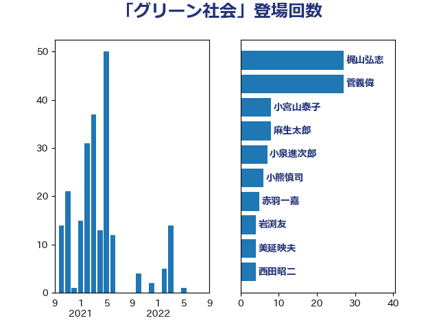

単語「グリーン社会」

| 梶山弘志 | 自由民主党 | 27 回 |
| 菅義偉 | 自由民主党 | 27 回 |
| 小宮山泰子 | 立憲民主党 | 8 回 |
| 麻生太郎 | 自由民主党 | 8 回 |
| 小泉進次郎 | 自由民主党 | 7 回 |
| 小熊慎司 | 立憲民主党 | 6 回 |
| 赤羽一嘉 | 公明党 | 5 回 |
| 岩渕友 | 日本共産党 | 4 回 |
| 美延映夫 | 日本維新の会 | 4 回 |
| 西田昭二 | 自由民主党 | 4 回 |
| 山崎誠 | 立憲民主党 | 3 回 |
| 森本真治 | 立憲民主党 | 3 回 |
| 浜野喜史 | 国民民主党 | 3 回 |
| 笠井亮 | 日本共産党 | 3 回 |
| 西村康稔 | 自由民主党 | 3 回 |
| 三木亨 | 自由民主党 | 2 回 |
| 上田清司 | 国民民主党 | 2 回 |
| 中西祐介 | 自由民主党 | 2 回 |
| 伊藤渉 | 公明党 | 2 回 |
| 宮本周司 | 自由民主党 | 2 回 |
| 山口壯 | 自由民主党 | 2 回 |
| 山口那津男 | 公明党 | 2 回 |
| 岸田文雄 | 自由民主党 | 2 回 |
| 徳永エリ | 立憲民主党 | 2 回 |
| 斉藤鉄夫 | 公明党 | 2 回 |
| 江島潔 | 自由民主党 | 2 回 |
| 片山大介 | 日本維新の会 | 2 回 |
| 田畑裕明 | 自由民主党 | 2 回 |
| 畦元将吾 | 自由民主党 | 2 回 |
| 石川博崇 | 公明党 | 2 回 |
| 礒崎哲史 | 国民民主党 | 2 回 |
| 舟山康江 | 国民民主党 | 2 回 |
| 萩生田光一 | 自由民主党 | 2 回 |
| 赤澤亮正 | 自由民主党 | 2 回 |
| 鬼木誠 | 立憲民主党 | 2 回 |
| こやり隆史 | 自由民主党 | 1 回 |
| 佐藤啓 | 自由民主党 | 1 回 |
| 冨樫博之 | 自由民主党 | 1 回 |
| 安達澄 | 無所属 | 1 回 |
| 室井邦彦 | 日本維新の会 | 1 回 |
| 小林鷹之 | 自由民主党 | 1 回 |
| 小野泰輔 | 日本維新の会 | 1 回 |
| 工藤彰三 | 自由民主党 | 1 回 |
| 平井卓也 | 自由民主党 | 1 回 |
| 星野剛士 | 自由民主党 | 1 回 |
| 杉久武 | 公明党 | 1 回 |
| 浜地雅一 | 公明党 | 1 回 |
| 渡辺猛之 | 自由民主党 | 1 回 |
| 滝沢求 | 自由民主党 | 1 回 |
| 熊谷裕人 | 立憲民主党 | 1 回 |
| 甘利明 | 自由民主党 | 1 回 |
| 石井啓一 | 公明党 | 1 回 |
| 磯崎仁彦 | 自由民主党 | 1 回 |
| 竹内真二 | 公明党 | 1 回 |
| 竹谷とし子 | 公明党 | 1 回 |
| 笹川博義 | 自由民主党 | 1 回 |
| 船橋利実 | 自由民主党 | 1 回 |
| 西岡秀子 | 国民民主党 | 1 回 |
| 里見隆治 | 公明党 | 1 回 |
| 金子恭之 | 自由民主党 | 1 回 |
| 金田勝年 | 自由民主党 | 1 回 |
| 鈴木俊一 | 自由民主党 | 1 回 |
| 長坂康正 | 自由民主党 | 1 回 |
| 関芳弘 | 自由民主党 | 1 回 |
| 高村正大 | 自由民主党 | 1 回 |